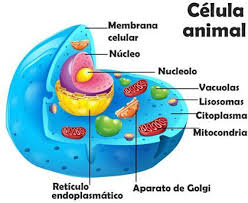

Introducción a la célula animal.
Una célula animal es un tipo de célula eucariota, es decir, que tiene un núcleo definido. Las células animales son las que forman los distintos tejidos de los organismos vivos que pertenecen al reino animalia (animales). Ya que los animales son seres pluricelulares complejos, sus células poseen un altísimo nivel de especialización: dependiendo del tejido al que pertenecen, cumplen funciones puntuales que definen su morfología, su función y sus necesidades.
Estructura y Elementos
La estructura de la cedula se divide en tres partes:
La envoltura celular, constituida por la membrana celular también conocida como membrana plasmática;
El citoplasma, en el que se hallan los orgánulos celulares: mitocondrias, lisosomas, aparato de Golgi, retículo endoplasmático liso, retículo endoplasmático rugoso, centriolos, y ribosomas;
El núcleo celular, formado por la membrana nuclear, que engloba y delimita al nucleoplasma, en el que se encuentran la cromatina y el nucléolo.

...
...
...
...
...
...